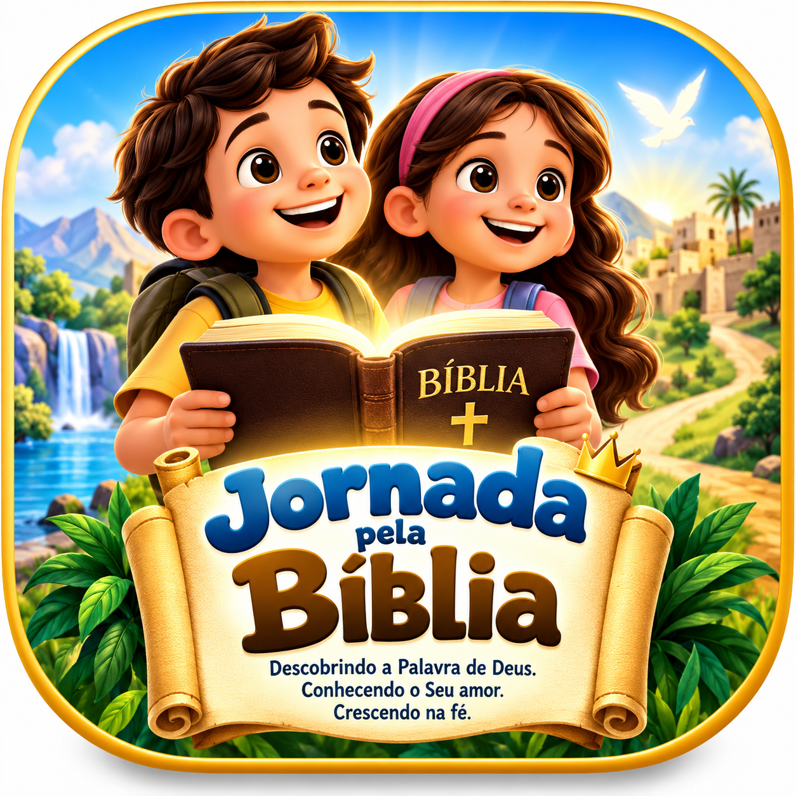

Aqui você encontrará histórias do Antigo e do Novo Testamento. Cada lição possui história, aprendizado, atividades e quiz.
Escolha uma cor e pinte livremente. Imagine a Arca de Noé com os animais que entraram nela.
Quem construiu uma grande arca porque obedeceu a Deus?
A Bíblia nos ensina sobre Deus, amor, fé, coragem, bondade, perdão, obediência e esperança.
Escolha uma história bíblica para acessar pintura, quebra-cabeça, palavras e quiz.
A Jornada pela Bíblia também pode ser vivida em família.
Escolha abaixo uma opção para consultar as Escrituras.
📖 Abrir Bíblia Online 📚 Consultar passagens bíblicas